22 imagens, na ordem em que aparecem no texto. A imagem grande de cada cartão é a que está no arquivo da autora. Quando foi possível localizá-la na internet, a versão encontrada aparece ao lado, na caixa cinza, com a licença e o link da fonte — 9 são a mesma imagem, 6 apenas parecidas, 6 não têm fonte de licença livre. Onde há substituta proposta, o cartão remete ao número dela em Sugeridas. Arquivos em Imagens/U3/atuais.
Verde: domínio público ou CC0, uso livre. Laranja: Creative Commons BY ou BY-SA, uso permitido com crédito ao autor na legenda. Vermelho: licença não livre ou não identificada — não usar sem autorização. Clique na miniatura para abrir a página do arquivo e conferir a licença.
Unidade 3. Da Revolução Russa à Morte de Lênin
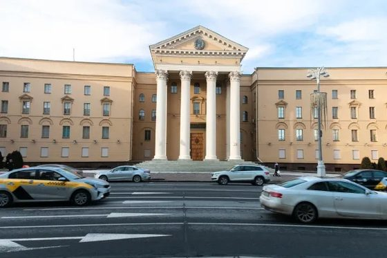
1Foto moderna de um prédio institucional (fachada neoclássica com pórtico de colunas), ilustrando os arquivos estatais russos GARF/FSB citados no texto Fonte não encontrada Legenda/crédito no texto: “GARF e FSB- Importantes arquivos estatais, guardam a verdade sobre a História da Rússia. Domínio Público.” Não foi possível identificar o prédio exato por busca textual (tentativas: GARF, FSB/Lubianka, RGASPI, Instituto Lenin, Academia do FSB). O prédio da imagem tem pórtico neoclássico com colunas e medalhão no frontão, diferente dos prédios de GARF (blocos modernistas) e da Lubianka (torre com relógio) encontrados no Commons. Não se achou esta imagem na internet — a que aparece acima é a do próprio arquivo da autora. Há substituta sugerida n.º 9 em Sugeridas, com a fonte e a licença arquivo do livro: Imagens/U3/atuais/01_Foto_moderna_de_um_predio_institucional_fachada_neoclassica_DO_LIVRO.png
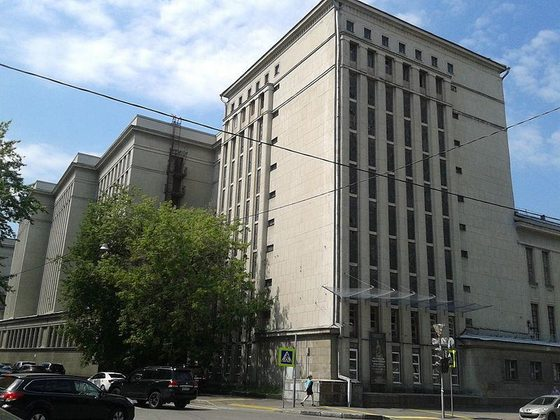
2Foto moderna de um prédio institucional cinza, estilo soviético/modernista, visto de esquina de rua Só imagem parecida (não é a mesma) Legenda/crédito no texto: “GARF e FSB- Importantes arquivos estatais, guardam a verdade sobre a História da Rússia. Domínio Público.” Foto de um dos prédios da 'cidade arquivística' do GARF (Arquivo Estatal da Federação Russa) em Moscou, bloco modernista cinza compatível com o estilo do prédio da foto do livro; mesma foto exata não confirmada.
Imagem parecida no Commons CC BY-SA 3.0 · 2560×1920 px GARF 1.jpg Autor/fonte: Vigoshi página no Commons · arquivo original arquivo: Imagens/U3/atuais/02_Foto_moderna_de_um_predio_institucional_cinza_estilo_sovieti_COMMONS.jpg
arquivo do livro: Imagens/U3/atuais/02_Foto_moderna_de_um_predio_institucional_cinza_estilo_sovieti_DO_LIVRO.jpg
De onde surgiu uma revolução como a dos russos?
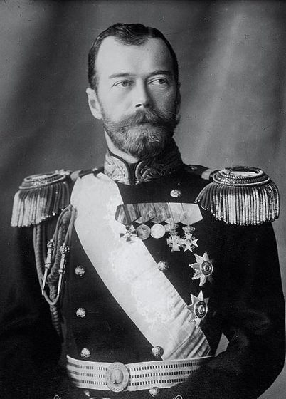
3Retrato oficial do czar Nicolau II em uniforme militar de gala, com faixa e condecorações Mesma imagem localizada no Commons Legenda/crédito no texto: “Domínio Público.” Retrato padrão de Nicolau II (1912), o mesmo usado no infobox da Wikipédia em inglês; proporção da imagem (0,72) quase idêntica à do livro (492x686=0,72), forte indício de ser a mesma foto/recorte.
Mesma imagem no Commons Public domain · 1008×1406 px Mikola II (cropped)-2.jpg Autor/fonte: Desconhecido página no Commons · arquivo original arquivo: Imagens/U3/atuais/03_Retrato_oficial_do_czar_Nicolau_II_em_uniforme_militar_de_ga_COMMONS.jpg
arquivo do livro: Imagens/U3/atuais/03_Retrato_oficial_do_czar_Nicolau_II_em_uniforme_militar_de_ga_DO_LIVRO.jpg
4Retrato do jovem Aleksandr Ulyanov (Sasha), irmão mais velho de Lênin, executado em 1887 Mesma imagem localizada no Commons Legenda/crédito no texto: “O jovem Lênin e seu irmão Sasha. Domínio Público” Foto-mugshot policial de Aleksandr Ulyanov (1887), a mais usada no Commons/Wikipedia para o irmão de Lênin; proporção quase idêntica à imagem do livro (387x518=0,747 vs 514x687=0,748).
Mesma imagem no Commons Public domain · 514×687 px Aleksandr Ulyanov (3x4 cropped).jpg Autor/fonte: Desconhecido página no Commons · arquivo original arquivo: Imagens/U3/atuais/04_Retrato_do_jovem_Aleksandr_Ulyanov_Sasha_irmao_mais_velho_de_COMMONS.jpg
arquivo do livro: Imagens/U3/atuais/04_Retrato_do_jovem_Aleksandr_Ulyanov_Sasha_irmao_mais_velho_de_DO_LIVRO.jpg
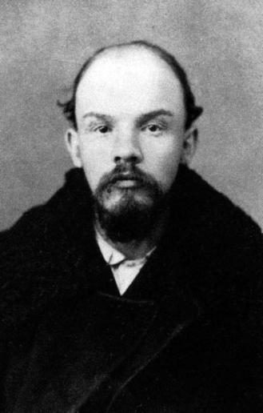
5Retrato de Lênin (Vladimir Ulyanov) jovem adulto, barba, casaco pesado Mesma imagem localizada no Commons Legenda/crédito no texto: “O jovem Lênin e seu irmão Sasha. Domínio Público” Foto icônica de Lênin em fevereiro de 1900, logo após o exílio na Sibéria (aos 30 anos); usada de forma ampla como 'jovem Lênin', embora a cena de Sasha no texto seja de 1887 (Lênin aos 17). Existem recortes menores no Commons ('Vladimir Lenin after finishing his exile in Siberia, 1900-2.jpg') com proporção mais próxima da imagem do livro.
Mesma imagem no Commons Public domain · 1038×1785 px Lenin, 1900 (Photo by Y.Mebius).jpg Autor/fonte: Y. Mebius página no Commons · arquivo original arquivo: Imagens/U3/atuais/05_Retrato_de_Lenin_Vladimir_Ulyanov_jovem_adulto_barba_casaco_COMMONS.jpg
arquivo do livro: Imagens/U3/atuais/05_Retrato_de_Lenin_Vladimir_Ulyanov_jovem_adulto_barba_casaco_DO_LIVRO.jpg
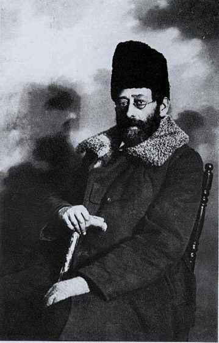
6Retrato de Julius Martov (Yuli Ossipovich Tsederbaum), líder menchevique, com chapéu de pele e casaco, 1917 Mesma imagem localizada no Commons Legenda/crédito no texto: “Július Martov em 1917. Domínio Público.” Foto de Martov tirada em Petrogrado em 1917 pelo fotógrafo Steinberg, mesma data da legenda do livro ('em 1917').
Mesma imagem no Commons Public domain · 620×885 px MartovW.jpg Autor/fonte: Yakov Vladimirovich Steinberg página no Commons · arquivo original arquivo: Imagens/U3/atuais/06_Retrato_de_Julius_Martov_Yuli_Ossipovich_Tsederbaum_lider_me_COMMONS.jpg
arquivo do livro: Imagens/U3/atuais/06_Retrato_de_Julius_Martov_Yuli_Ossipovich_Tsederbaum_lider_me_DO_LIVRO.jpg
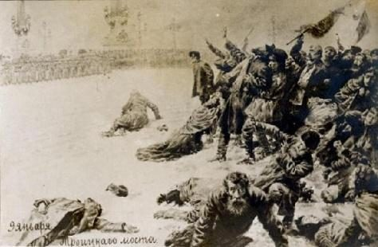
7Ilustração/postal de época do Domingo Sangrento (9 de janeiro de 1905), com legenda russa '9 января' e 'у Троицкого моста' (perto da Ponte Trindade), corpos caídos na neve Só imagem parecida (não é a mesma) Legenda/crédito no texto: “Domínio Público” Ilustração de época do Domingo Sangrento (cavalaria avançando sobre a multidão na neve); não é o mesmo postal com a legenda 'у Троицкого моста', que não foi localizado no Commons.
Imagem parecida no Commons Public domain · 299×377 px BloodySunday1905b.jpg Autor/fonte: Desconhecido página no Commons · arquivo original arquivo: Imagens/U3/atuais/07_Ilustracao_postal_de_epoca_do_Domingo_Sangrento_9_de_janeiro_COMMONS.jpg
arquivo do livro: Imagens/U3/atuais/07_Ilustracao_postal_de_epoca_do_Domingo_Sangrento_9_de_janeiro_DO_LIVRO.jpg
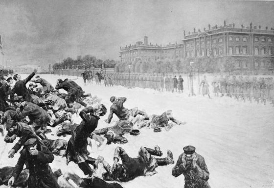
8Pintura/ilustração representando o Domingo Sangrento, corpos na neve em frente a um grande edifício, soldados enfileirados Só imagem parecida (não é a mesma) Legenda/crédito no texto: “Representação Domingo Sangrento, 1905. Domínio Público” Pintura de época (1905) do mesmo evento (Domingo Sangrento) pelo pintor russo Vladimir Makovsky; composição diferente da imagem do livro, mas mesmo assunto e mesma licença de domínio público.
Imagem parecida no Commons Public domain · 886×769 px Vladimir Makovsky — The 9th of January 1905 on Vasilievsky Island — Bloody Sunday (1905).jpg Autor/fonte: Vladimir Makovsky página no Commons · arquivo original arquivo: Imagens/U3/atuais/08_Pintura_ilustracao_representando_o_Domingo_Sangrento_corpos_COMMONS.jpg
arquivo do livro: Imagens/U3/atuais/08_Pintura_ilustracao_representando_o_Domingo_Sangrento_corpos_DO_LIVRO.jpg
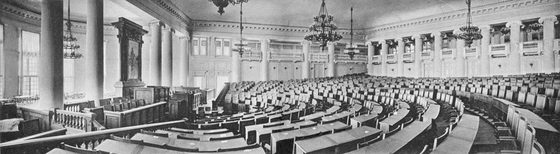
9Foto panorâmica antiga do salão do Palácio Tauride (Tauride Palace) em São Petersburgo, onde funcionou a Primeira Duma, fileiras de carteiras vazias e colunas Fonte não encontrada Legenda/crédito no texto: “Local onde funcionou a Primeira Duma, ainda na época imperial. Domínio Público.” Encontradas apenas fotos MODERNAS coloridas do salão da Duma no Palácio Tauride (ex.: File:0835Fb2. St. Petersburg. Tauride Palace (interiors).jpg, CC BY-SA 4.0) e fotos de grupos de deputados de 1906, mas nenhuma foto histórica em P&B do salão vazio no mesmo enquadramento panorâmico do livro. Não se achou esta imagem na internet — a que aparece acima é a do próprio arquivo da autora. Há substituta sugerida n.º 8 em Sugeridas, com a fonte e a licença arquivo do livro: Imagens/U3/atuais/09_Foto_panoramica_antiga_do_salao_do_Palacio_Tauride_Tauride_P_DO_LIVRO.jpg
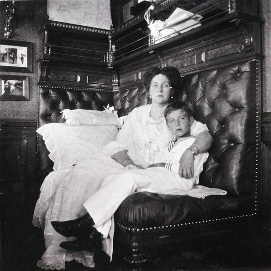
10Czarina Alexandra Feodorovna sentada em um sofá estofado com o filho Alexei (ainda criança), em um ambiente de camarote/vagão Mesma imagem localizada no Commons Legenda/crédito no texto: “Domínio Público.” Foto de 1913 da imperatriz Alexandra Feodorovna com o Tsarevich Alexei; proporção praticamente quadrada igual à da imagem do livro (613x613).
Mesma imagem no Commons Public domain · 2447×2497 px Alexandra Feodorovna with her son.jpg Autor/fonte: Boasson and Eggler, St. Petersburg (1913) página no Commons · arquivo original arquivo: Imagens/U3/atuais/10_Czarina_Alexandra_Feodorovna_sentada_em_um_sofa_estofado_com_COMMONS.jpg
arquivo do livro: Imagens/U3/atuais/10_Czarina_Alexandra_Feodorovna_sentada_em_um_sofa_estofado_com_DO_LIVRO.jpg
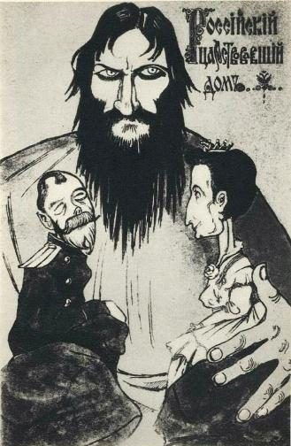
11Caricatura de época intitulada 'Российский царствующий дом' (A Casa Reinante Russa), com Rasputin gigante segurando caricaturas de Nicolau II e Alexandra nas mãos Fonte não encontrada Legenda/crédito no texto: “Na primeira imagem Rasputim e na segunda uma caricatura da época criticando a família real. Domínio Público” Charge política russa clássica sobre Rasputin controlando os czares; não localizada no Commons por busca textual (tentado em russo e inglês). Não se achou esta imagem na internet — a que aparece acima é a do próprio arquivo da autora. arquivo do livro: Imagens/U3/atuais/11_Caricatura_de_epoca_intitulada_A_Casa_Reinante_Russa_com_Ras_DO_LIVRO.jpg
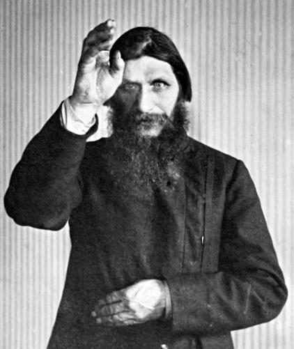
12Fotografia de Grigori Rasputin, mão direita erguida próxima ao rosto, olhar fixo, fundo listrado Só imagem parecida (não é a mesma) Legenda/crédito no texto: “Na primeira imagem Rasputim e na segunda uma caricatura da época criticando a família real. Domínio Público” Retrato fotográfico icônico de Rasputin (anos 1910), mesma pessoa e mesmo estilo de retrato de estúdio; pose exata (mão erguida) não confirmada nesta versão.
Imagem parecida no Commons Public domain · 2276×3000 px Rasputin PA.jpg Autor/fonte: Desconhecido página no Commons · arquivo original arquivo: Imagens/U3/atuais/12_Fotografia_de_Grigori_Rasputin_mao_direita_erguida_proxima_a_COMMONS.jpg
arquivo do livro: Imagens/U3/atuais/12_Fotografia_de_Grigori_Rasputin_mao_direita_erguida_proxima_a_DO_LIVRO.jpg
O Governo Provisório e a Revolução de Outubro
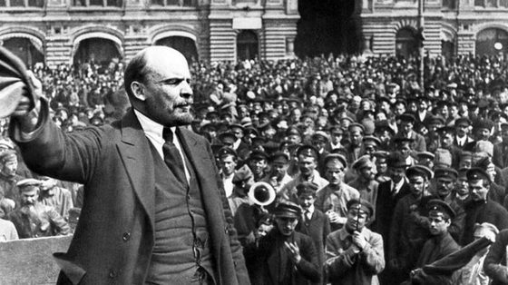
13Lênin discursando para uma multidão, mão erguida segurando o chapéu, prédio ao fundo Mesma imagem localizada no Commons Legenda/crédito no texto: “Lênin em outubro de 1918, no aniversário de um ano da Revolução Bolchevique. Domínio Público” Foto icônica de Lênin discursando na Praça Sverdlov (Teatralnaya), Moscou, para tropas que partiam para a Frente Polonesa. ATENÇÃO: a data correta do evento é 5 de maio de 1920 (não outubro de 1918, como diz a legenda do livro); é a mesma fotografia amplamente usada nesse contexto.
Mesma imagem no Commons Public domain · 5275×3525 px Vladimir Lenin Speech in May 1920.jpg Autor/fonte: Grigory Petrovich Goldstein página no Commons · arquivo original arquivo: Imagens/U3/atuais/13_Lenin_discursando_para_uma_multidao_mao_erguida_segurando_o_COMMONS.jpg
arquivo do livro: Imagens/U3/atuais/13_Lenin_discursando_para_uma_multidao_mao_erguida_segurando_o_DO_LIVRO.jpg
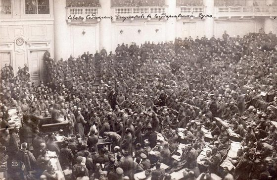
14Foto panorâmica de um grande salão lotado de soldados, legenda manuscrita em russo no alto ('Совет Солдатскихъ Депутатовъ въ Государственной Думе' = Conselho de Deputados Soldados na Duma Estatal), número '25' no canto inferior esquerdo Fonte não encontrada Legenda/crédito no texto: “Reunião dos Sovietes em 1917. Domínio Público” Foto de arquivo (aparenta ser cartão-postal de época, com legenda escrita à mão) do Soviete/Conselho de Soldados reunido no salão da Duma em Petrogrado, 1917; não localizada no Commons por busca textual em russo/inglês. Não se achou esta imagem na internet — a que aparece acima é a do próprio arquivo da autora. arquivo do livro: Imagens/U3/atuais/14_Foto_panoramica_de_um_grande_salao_lotado_de_soldados_legend_DO_LIVRO.jpg
15Grupo de guardas vermelhos armados (rifles, pistolas, metralhadoras) posando em frente a um prédio industrial com faixa 'КРАСНАЯ ГВАРДІЯ ЗАВОДА ВУЛКАНЪ 11 ГР' (Guarda Vermelha da Fábrica Vulkan, 2º grupo) Mesma imagem localizada no Commons Legenda/crédito no texto: “Na imagem, guardas do exército vermelho ocupam uma fábrica em out.de 1917. Domínio Público.” Correspondência exata: mesma resolução em pixels da imagem do livro (606x389), foto de Viktor Bulla, outubro de 1917, Guarda Vermelha da fábrica Vulkan em Petrogrado.
Mesma imagem no Commons Public domain · 606×389 px Red Guard Vulkan factory.jpg Autor/fonte: Viktor Bulla página no Commons · arquivo original arquivo: Imagens/U3/atuais/15_Grupo_de_guardas_vermelhos_armados_rifles_pistolas_metralhad_COMMONS.jpg
arquivo do livro: Imagens/U3/atuais/15_Grupo_de_guardas_vermelhos_armados_rifles_pistolas_metralhad_DO_LIVRO.jpg
A Guerra Civil 1918-1922
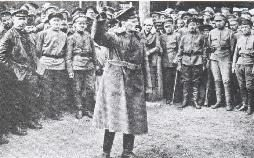
16Foto pequena e de baixa resolução de um comandante em sobretudo e chapéu de pele, braço erguido, discursando para um semicírculo de soldados ao ar livre Fonte não encontrada Legenda/crédito no texto: “Trotsky liderando o exército vermelho. Fonte: Domínio Público” Não foi possível localizar esta foto específica de Trotsky (ou de comandante do Exército Vermelho) no Commons; a baixa resolução original (254x158) sugere cópia de baixa qualidade de fonte não identificada. Não se achou esta imagem na internet — a que aparece acima é a do próprio arquivo da autora. Há substituta sugerida n.º 7 em Sugeridas, com a fonte e a licença arquivo do livro: Imagens/U3/atuais/16_Foto_pequena_e_de_baixa_resolucao_de_um_comandante_em_sobret_DO_LIVRO.jpg
17Retrato de grupo formal da família Romanov: Nicolau II sentado ao centro com farda, cercado pela esposa Alexandra e os cinco filhos (Olga, Tatiana, Maria, Anastácia e Alexei) Mesma imagem localizada no Commons Legenda/crédito no texto: “Domínio Público. Não contavam, porém, com a aproximação do exército branco... executá-los em julho de 1918.” Retrato clássico da família imperial russa (1913), o mesmo grupo e pose da imagem do livro; excelente resolução disponível no Commons.
Mesma imagem no Commons Public domain · 4295×3495 px Family Nicholas II of Russia ca. 1914.jpg Autor/fonte: Boasson and Eggler, St. Petersburg (1913) página no Commons · arquivo original arquivo: Imagens/U3/atuais/17_Retrato_de_grupo_formal_da_familia_Romanov_Nicolau_II_sentad_COMMONS.jpg
arquivo do livro: Imagens/U3/atuais/17_Retrato_de_grupo_formal_da_familia_Romanov_Nicolau_II_sentad_DO_LIVRO.jpg
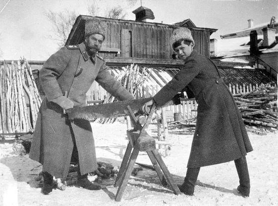
18Nicolau II e o filho Alexei serrando um tronco de madeira juntos, ao ar livre, no inverno, durante o cativeiro em Tobolsk Mesma imagem localizada no Commons Legenda/crédito no texto: “Domínio Público. Os restos mortais da família Romanov foram descobertos apenas décadas depois, em 1991...” Foto de Nicolau II serrando lenha com o filho Alexei em Tobolsk, inverno de 1917-18; proporção da imagem (1,35) quase idêntica à do livro (807x599=1,35).
Mesma imagem no Commons Public domain · 1368×1016 px AlexeiNicholas1917.jpg Autor/fonte: Grã-duquesa Maria Nikolaevna (atribuído); acervo Beinecke Library, Yale página no Commons · arquivo original arquivo: Imagens/U3/atuais/18_Nicolau_II_e_o_filho_Alexei_serrando_um_tronco_de_madeira_ju_COMMONS.jpg
arquivo do livro: Imagens/U3/atuais/18_Nicolau_II_e_o_filho_Alexei_serrando_um_tronco_de_madeira_ju_DO_LIVRO.jpg
19Cinco crianças desnutridas (barrigas d'água, membros atrofiados) em frente a uma casa de madeira, retratando a fome no campo russo Só imagem parecida (não é a mesma) Legenda/crédito no texto: “Domínio Público” Foto de crianças com corpos inchados por desnutrição num hospital infantil de Stavropol, fome russa de 1921; mesmo evento histórico e tipo de imagem (fundação Nansen documentou vários casos semelhantes), mas não confirmada como a mesma foto exata (crop/orientação diferentes).
Imagem parecida no Commons Public domain · 6449×4595 px No-nb bldsa 6a128.jpg Autor/fonte: Isaiah Liberman (acervo Biblioteca Nacional da Noruega) página no Commons · arquivo original arquivo: Imagens/U3/atuais/19_Cinco_criancas_desnutridas_barrigas_d_agua_membros_atrofiado_COMMONS.jpg
arquivo do livro: Imagens/U3/atuais/19_Cinco_criancas_desnutridas_barrigas_d_agua_membros_atrofiado_DO_LIVRO.png
A morte de Lênin, entram em cena Trotsky e Stálin
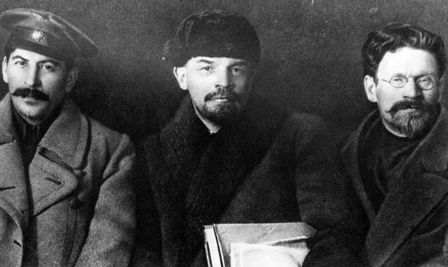
20Foto de três homens sentados lado a lado: à esquerda um homem de bigode e boné militar (Stálin), ao centro um homem de barba e chapéu de pele escuro (Lênin), à direita um homem de óculos redondos e barba cheia Fonte não encontrada Legenda/crédito no texto: “Stálin, Lenin e Trotsky juntos em 1918. Domínio Público” Não localizada no Commons por busca textual (tentativas: 'Stalin Lenin Trotsky photograph/1918/1919/congress'). Observação: o homem à direita, com óculos redondos e barba cheia, tem fisionomia atípica para Trotsky nas fotos mais conhecidas (geralmente sem óculos e com cavanhaque); vale checar se a legenda do livro identifica corretamente a terceira pessoa. Não se achou esta imagem na internet — a que aparece acima é a do próprio arquivo da autora. arquivo do livro: Imagens/U3/atuais/20_Foto_de_tres_homens_sentados_lado_a_lado_a_esquerda_um_homem_DO_LIVRO.jpg
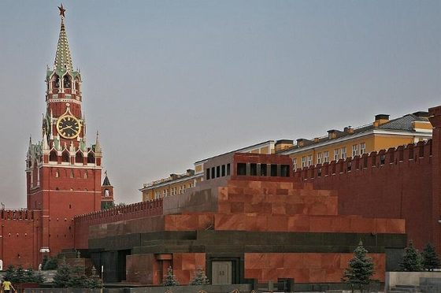
21Foto colorida moderna do Mausoléu de Lênin na Praça Vermelha, com a muralha do Kremlin e a Torre Spasskaya ao fundo Só imagem parecida (não é a mesma) Legenda/crédito no texto: “[Wikimedia Commons](link). ” O próprio texto do livro já cita 'Wikimedia Commons' como fonte antes desta imagem. Foto moderna (2024) com mesmíssimo enquadramento e proporção (1,51) da imagem do livro (711x472=1,51), mas de data posterior à provável origem da imagem do livro, portanto não pode ser o arquivo original — usar como substituta de melhor resolução com a mesma composição. Exige crédito ao autor (CC BY 4.0).
Imagem parecida no Commons CC BY 4.0 · 5520×3677 px Moscow - Red Square, the Kremlin Wall and Lenin's Mausoleum.jpg Autor/fonte: Юрий Д.К. página no Commons · arquivo original arquivo: Imagens/U3/atuais/21_Foto_colorida_moderna_do_Mausoleu_de_Lenin_na_Praca_Vermelha_COMMONS.jpg
arquivo do livro: Imagens/U3/atuais/21_Foto_colorida_moderna_do_Mausoleu_de_Lenin_na_Praca_Vermelha_DO_LIVRO.jpg
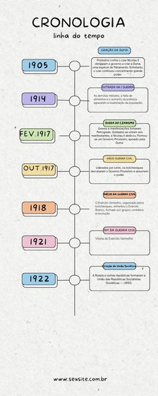
22Infográfico de linha do tempo ('CRONOLOGIA') em português, cores pastel, com marca d'água de rodapé 'www.seusite.com.br' (modelo/template genérico) Ícone / esquema da autora Legenda/crédito no texto: “Editor, por favor, fazer uma linha do tempo nesse esquema da linha abaixo ou melhorar a linha abaixo” Esquema/linha do tempo de modelo genérico (nota o watermark 'seusite.com.br'), não uma foto de arquivo; o próprio texto pede que o editor refaça ou melhore essa linha do tempo — não precisa de fonte do Commons, apenas de redesenho editorial. arquivo do livro: Imagens/U3/atuais/22_Infografico_de_linha_do_tempo_CRONOLOGIA_em_portugues_cores_DO_LIVRO.jpg